My Laser-Cutter Projects
 Danny Wahl
•
•
Danny Wahl
•
•
I never knew I was an artist until the let me play with lasers ‐Me
Background
A couple of years ago now one of the schools I was working with told me they wanted to start a Maker Space. I didn't realize it but they had brought me into the conversation fairly late.
They had already decided that they were going to buy a laser cutter, in fact they had already purchased it. They wanted to know if I could learn to use it, come up with safety procedures, train some other staff, and help develop classroom application.
Initially I thought "what a terrible idea." In fact, I still kind of do. They spent the entire year's budget for the space on one machine. That's not so practical when it comes to classroom application. I would have much rather bought $10,000 worth of circuit boards, soldering irons, cardboard, fabric, sewing machines, etc... But hey, what was done was done.
At least the machine they ended up getting was really nice. Industrial quality textile-cutting laser with a cutting area of about 3' x 4'. That's enough to make some massive projects.
Over the course of a year I spent a fair amount of time with the machine, learning the ins and outs of how how to use it, developing safety protocols, classroom projects, and maybe (hopefully) exposing myself to some gamma radiation.
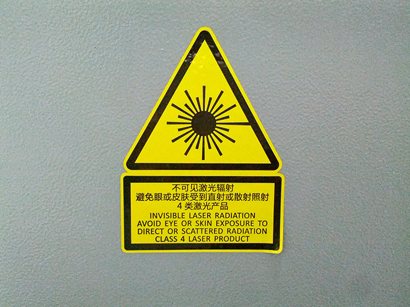
Seriously though, if you don't close the radiation hood you'll have a pretty good headache after about 15 minutes of operation.
Anyways, I don't consider myself a particularly creative person- and definitely not a visually creative person. I'm terrible with color schemes, bad at UI/UX (which is why I love working with APIs so much), but for some reason I just got totally creative - literally creating things with the laser. Here are some of the projects I created.
Material Templates
I made a bunch of these templates out of different materials, effectively trying to eliminate the guess-work and minimize material waste. Across the top is the material type and laser settings. As well as cut-speed at 10%, 20%, etc... and etch-speed in increments of 5%.

These turned out to be one of the most valuable resources I made.
iPad Case
We even played with etching names onto iPad cases. That was a fun one, and apparently there's big money to be made in this. I'll tell you a secret, it's like 5 minutes worth of work.
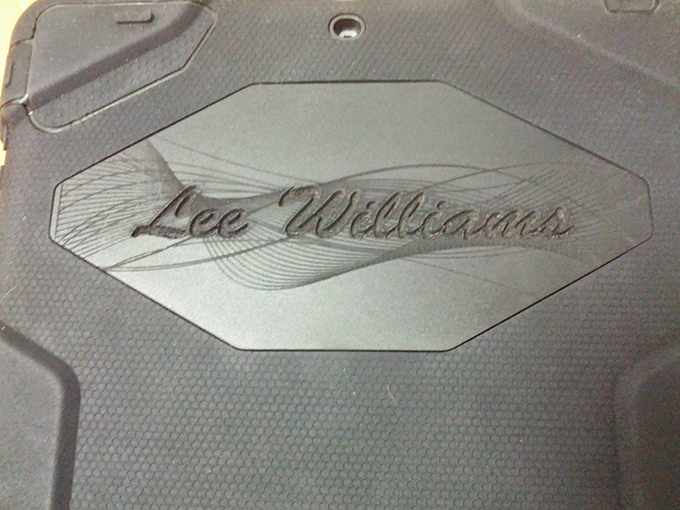
Ring Calendar
This calendar was really fun. Again, I don't know where I got the idea, I just kind of came up with it. It's 3 concentric circles, months, dates, and days. I made it for my wife for our anniversary that year. I think she liked it except for the fact that she had to remember to change it every day...
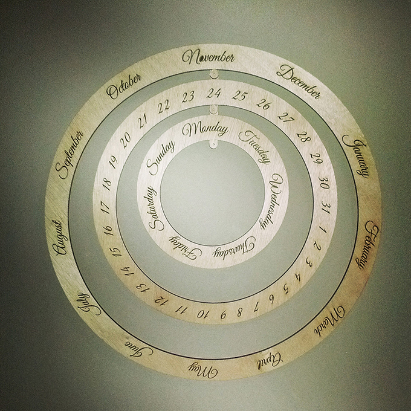
MacBook City Map Case
This one was really fun. I downloaded the XML from the open maps project for Tianjin, converted it to a vector image, cropped it, removed a bunch of stuff except major roads and highways and then flipped it horizontally and etched it on the inside of a MacBook case. The yellow coloring is actually trapped plastic smoke. I'd love to do this one again with a better quality material.
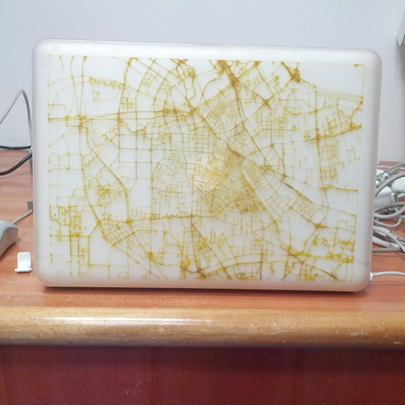
Custom Journal
A lot of these projects were simply throwing materials at the laser (or vice versa technically...) and seeing what it could do. I was also playing around with Adobe Illustrator a lot to learn new tricks. I brought a faux-leather journal from home and traced the letter "M" on the cover with a floral pattern inlay and etched my daughter's name on the spine.

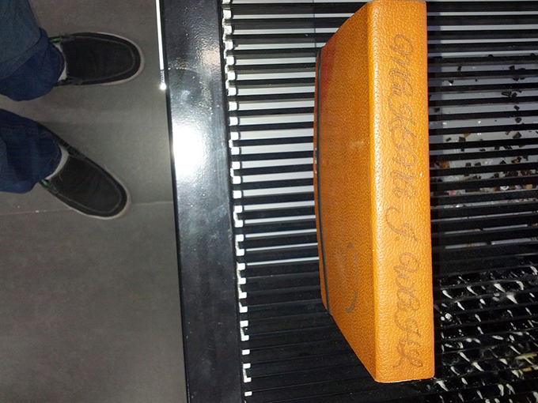
Basketball
This is where I feel it's important to mention that there are different types of laser cutters. The one we had was for textiles and so moved horizontally on an X and Y axis. It could only handle flat objects. There are other types of lasers which the laser is stationary and 3D objects are moved/rotated under the laser (for etching like mugs, etc...). We tried anyways and put the school's name on a basketball. Notice how the edges are faded as the laser power decreases with distance.
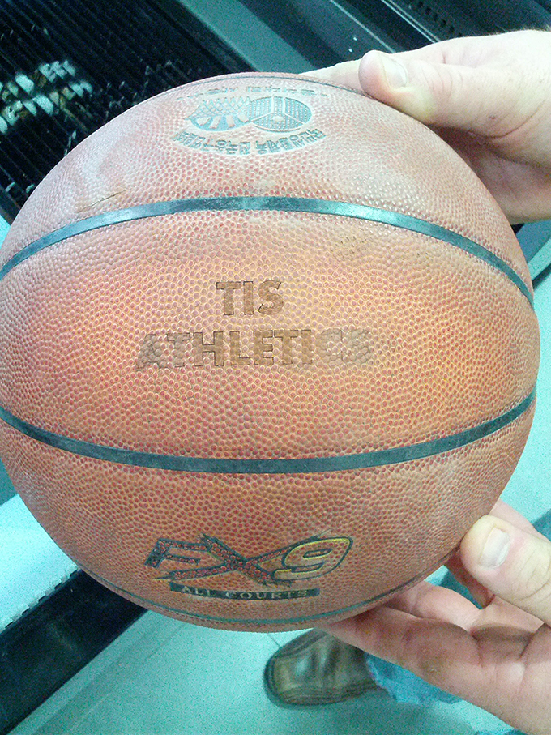
How thrilled would your IT staff be to get to engrave all the school property with a laser instead of a label maker?!
Christmas Ornaments
I spent a full quarter working with 8th graders teaching them the fundamentals of Adobe Illustrator and vector images. It culminated in a project to create a Christmas ornament which we cut out on the machine. Here's something that's really cool: We used cardboard to prototype, so we were able to do 3 or 4 "drafts" before we cut the final ones out of wood. Here's another thing that's really cool. When kids watch the laser cut out their project and it gets completely demolished you have far more "oh!" moments than you do repeatedly explaining it in a classroom.
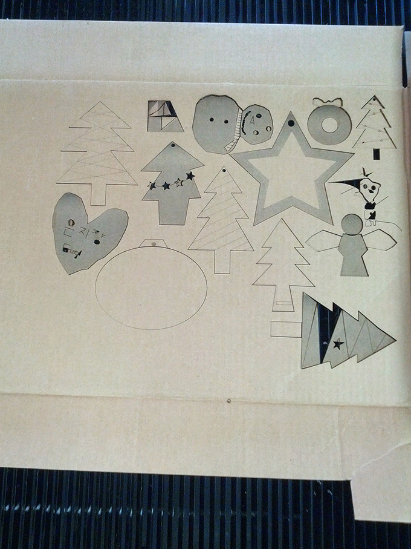
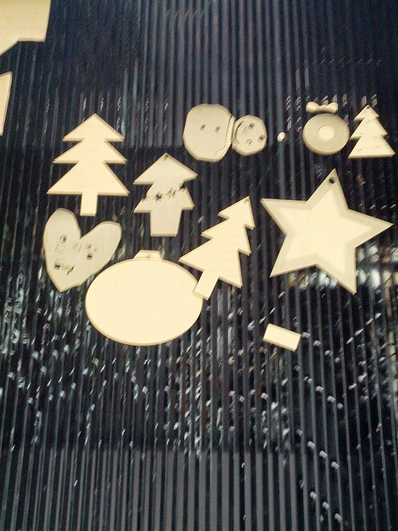
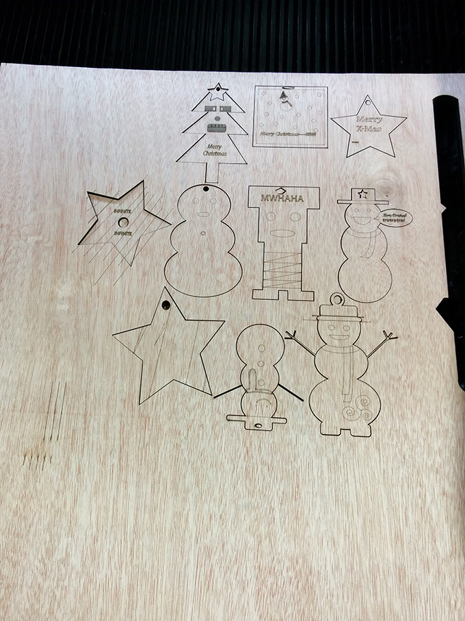
Coffee Rocket
Even though the laser can only cut vertically, there is a degree of tolerance, it works really well for writing vertically on cylinders. Here's a rocket coffee mug one of the teachers bought for her dad. We etched his name on it.

Photo Frame
My friend's wife came up with this vision, it's a sort of layered photo frame. The front layer is grass and leaves and the back layer is trunks.
After I gave it to her she painted a landscape behind it, unfortunately I don't have a picture of the finished project, but you get the idea.
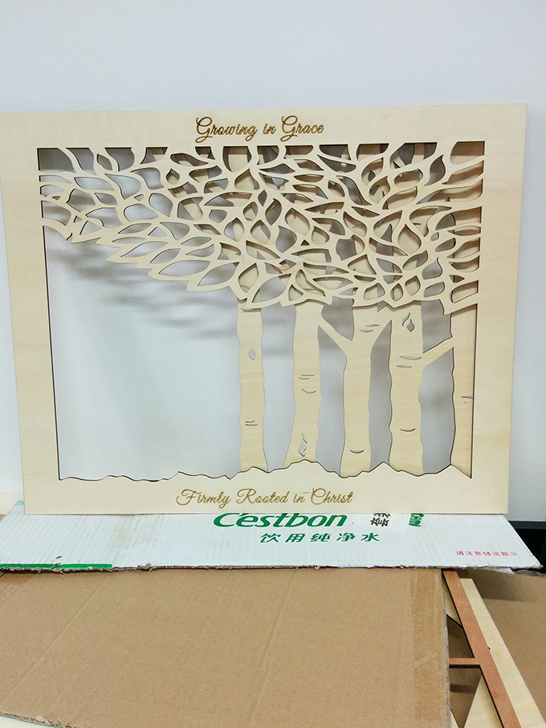
Chess Board
The crown-jewel of my creations was this chess board. I don't remember how I came up with the idea but I thought that a faux-3D chess board would be so cool. I spent quite a few hours in illustrator laying this out (grr... math.) It's 5 layers of balsa wood with a plexiglass top. I love this thing, in fact it's like the only project I kept.

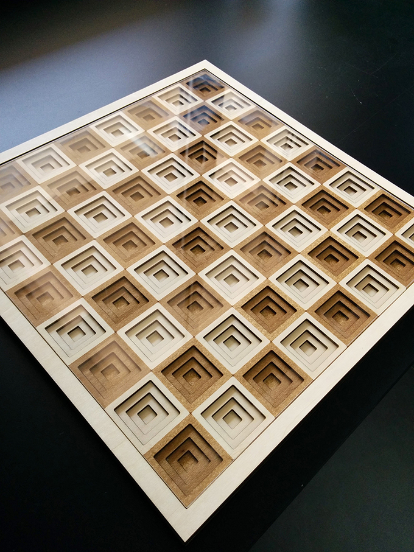
Conclusion
I love laser cutters. I think that a laser cutter would make a great addition to an already vibrant maker space, but it's not the tool I would pick to start one due to high cost entry, moderate learning curve, and the fact that they're so big it's not feasible to have more than one. That said, they are a wonderful complement to STEAM programs. I would argue that these projects are some of the most artistic, creative things I've done in my life, but they are highly technical and precision engineered (well most of them).
If you're thinking of adding a laser cutter to your arsenal, or already have one, and are trying to figure out some inspirational projects or project-based-learning projects feel free to take any of these ideas listed above. Just be sure to have fun!